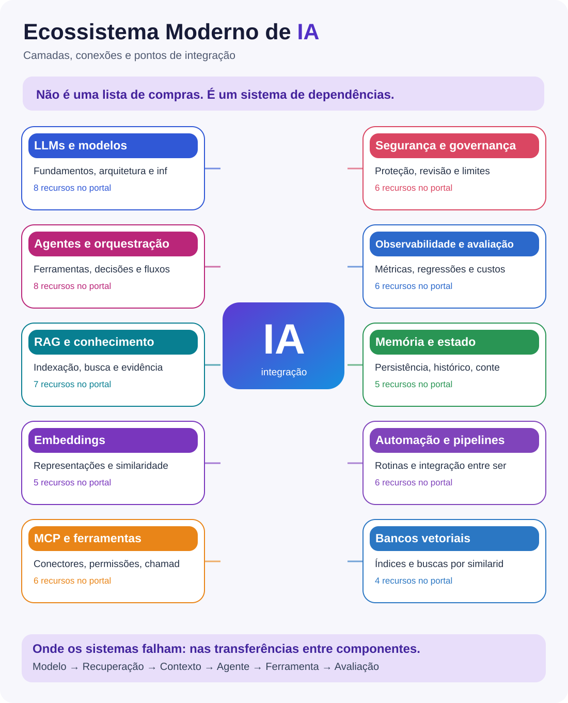

IA fazendoIA— ou quase.
Os experimentos continuam aqui.
Explore o ecossistema de inteligência artificial.
Clique em um tema ao lado da imagem para abrir os links dos nossos materiais já publicados. É um índice vivo: cada área mostra o que temos — e permite enxergar onde ainda precisamos estudar.

LLMs e modelos8 recursos
Fundamentos, arquitetura e inferência.
Agentes e orquestração8 recursos
Ferramentas, decisões e fluxos.
RAG e conhecimento7 recursos
Indexação, busca e evidência.
Embeddings5 recursos
Representações e similaridade.
MCP e ferramentas6 recursos
Conectores, permissões, chamadas.
Segurança e governança6 recursos
Proteção, revisão e limites.
Observabilidade e avaliação6 recursos
Métricas, regressões e custos.
Memória e estado5 recursos
Persistência, histórico, contexto.
Automação e pipelines6 recursos
Rotinas e integração entre serviços.
Bancos vetoriais4 recursos
Índices e buscas por similaridade.
61 entradas temáticas levam a 29 páginas únicas, sem duplicar arquivos. Nenhum link foi criado para material inexistente. Consultar cobertura e lacunas.
00 / 21
A máquina ajuda.
Quem assina responde.
Esta é a parte do livro que não precisa ficar parada no papel.
Plataformas mudam, interfaces desaparecem e instruções envelhecem. Este caderno reúne procedimentos, arquivos fictícios e correções. Com exemplos claros, orientações reproduzíveis e informações de apoio à leitura.
Consultar os 21 capítulosDO CADERNO
Onde começar
- 01Os capítulos21 destinos
Sumário e materiais complementares.
- 02A bancada do leitor21 laboratórios
Experimentos com instruções reproduzíveis.
- 03Correções de percursoErratas e gates
Erratas e mudanças de compatibilidade.
- 0440 perguntas essenciais sobre LLMs7 seções · SVG
Guia complementar ilustrado: fundamentos, Transformers, prompting, RAG, segurança e implantação.
- 05Arquitetura funcional de um agente de IAInfográfico SVG
Fluxo conceitual original: objetivo, orquestração, LLM, ferramentas, RAG, controle e implantação.
- 06Arquitetura de um pipeline RAGFluxo SVG
Duas trilhas: preparação do conhecimento, consulta, recuperação e resposta com fontes.
LIVROS DO AUTOR
Outras histórias, a mesma curiosidade.
Da informática clássica aos experimentos com IA.
Conheça as obras de José Albuquerque, incluindo a saga da FabULA, projetos de jogos para TK90X e MSX, história da microinformática e guias técnicos.
Conhecer os livros do autor“Nada é ‘funcionou’ sem prova. Simplicidade é força. Isole e meça antes de adivinhar. Não reinvente a roda. E cresçam juntos.”
01—21
21 experiências para colocar a IA à prova.
O livro explica o método. Aqui você pode experimentá-lo.
14 exercícios com scripts Python e 7 investigações sem código. Modelos de skills, exemplos, contratos e registros. Os materiais estão organizados por capítulo, com instruções para quem nunca usou Git.
Explorar os 21 laboratóriosVer evidências e limites